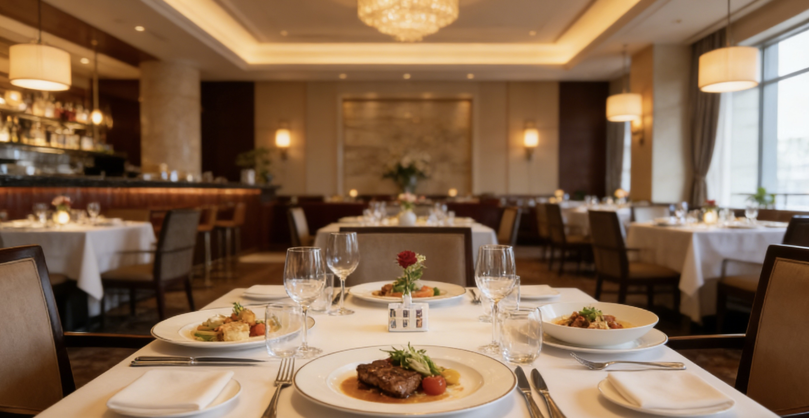
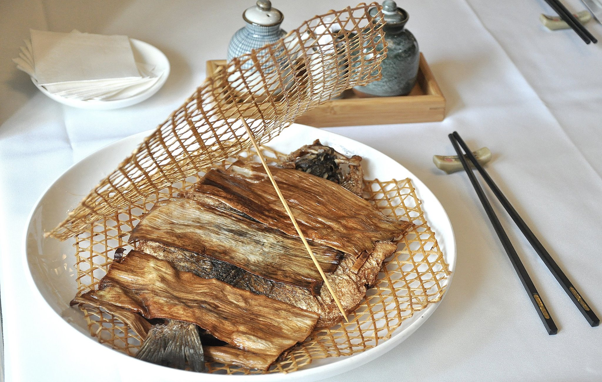

【探店】感受青州风雅，品味舌尖盛宴——青州国际大酒店深度体验
在青州这座快速发展的现代化都市中，如何寻找一处既能承载商务宴请的庄重，又不失本地文化风韵的休闲之所？答案无疑指向了城市地标——青州国际大酒店。这次，我们深入探访了这家老牌五星级酒店，从环境到菜品，为您带来第一手测评。
一、 环境篇：经典与现代的交融
青州国际大酒店位于青州市的核心地带，外观大气恢宏。走进大堂，挑高设计配合巨型水晶吊灯，营造出一种典雅而又不失气派的氛围。酒店的空间设计充分考虑了客户的私密需求，无论是商务会谈还是私人聚餐，都能找到最合适的场所。
尤其值得一提的是其行政酒廊和空中花园餐厅。行政酒廊视野极佳，是俯瞰青州夜景的绝佳地点；而空中花园则巧妙地将自然绿意引入室内，让人在喧嚣都市中也能享受到片刻宁静。酒店的包厢设计更是别具匠心，融合了青州传统园林元素，私密性极高，是高端宴请的首选。
二、 菜品篇：寻味青州，创新融合
青州国际大酒店的餐饮团队以本地食材的精选和淮扬菜系的精髓为基础，融入了国际化的烹饪技法，形成了其独特的菜品风格。这次，我们重点推荐三道必尝的特色菜：
- 松露脆皮烤鸭： 在传统烤鸭的基础上，巧妙地加入了松露油提香，鸭皮酥脆，鸭肉鲜嫩，搭配特制的面饼和酱料，口感层次丰富，令人惊艳。
- 竹网鲈鱼： 精选鲜活鲈鱼，以传统竹网包裹，文火慢烤或清蒸入味，鱼皮微焦而内里滑润，最大程度锁住原汁本香。成菜色泽清亮，香气扑鼻，是宴席上备受青睐的点睛之笔。
- 蟹粉狮子头： 淮扬菜的代表作。酒店选用当季新鲜蟹粉，与手工剁制的肉馅完美结合，口感绵软细腻，汤汁醇厚，彰显了厨师对火候的精准掌握。
除了中餐的经典演绎，酒店的西餐厅和自助餐同样表现出色，食材新鲜度高，海鲜区尤其受到食客好评。无论是家庭聚餐、朋友小聚，还是重要的商务晚宴，这里都能提供超出预期的美食体验。
结语与预订
青州国际大酒店凭借其顶级的硬件设施、精致的餐饮服务以及深厚的文化底蕴，无愧于青州顶尖酒店的称号。它不仅是一个下榻之所，更是一扇了解和体验青州高品质生活风貌的窗口。
地址： 青州市天云区启智路99号
预订热线： (0532) 8888-6666
特别提醒： 热门包厢需提前一周预订。